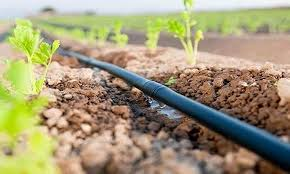

There are various adaptive and resilient planting techniques that are used to address challenges such as
climate change, soil degradation, and water scarcity. Some examples include:
Agroforestry: Integrating trees with crops or livestock to provide shade, improve soil fertility,
and diversify income sources.Agroforestry is a land-use system that combines the cultivation of trees or
shrubs with agricultural crops or livestock on the same piece of land. It offers numerous benefits, including
diversified income, improved soil health, erosion control, biodiversity promotion, and climate change
mitigation. Agroforestry practices vary but generally involve integrating trees or woody plants into farming
and grazing systems to enhance sustainability and resilience.
 AGROFARMING YOUTUBE LINK
AGROFARMING YOUTUBE LINK
Crop Rotation: Alternating the types of crops grown in a specific area to enhance soil health, prevent pests, and improve yields.Crop rotation is a farming practice where different crops are planted in a specific sequence on the same piece of land over time. It helps improve soil health, reduce pest and disease pressure, and increase overall crop yields by preventing nutrient depletion and promoting biodiversity in the soil.

Cover Cropping: Planting cover crops during off-seasons to protect soil from erosion, fix nitrogen, and improve soil structure.Cover cropping is a farming technique where specific plants, known as cover crops, are grown in between main crop seasons. These cover crops help protect and improve the soil by preventing erosion, adding organic matter, and suppressing weeds. They also enhance soil fertility and promote biodiversity in agricultural systems.
Permaculture: Designing systems that mimic natural ecosystems, using a variety of plants to create a sustainable and self-sufficient environment.Permaculture is an ecological design approach that aims to create sustainable and self-sufficient systems. It integrates principles from nature to develop agricultural and living systems that are harmonious with the environment. Key elements include maximizing efficiency, minimizing waste, and fostering diversity to create resilient and regenerative ecosystems.
PERMACULTURE YOUTUBE LINKRainwater Harvesting: Collecting and storing rainwater for irrigation, reducing reliance on scarce water resources.Rainwater harvesting is a technique that collects and stores rainwater for later use. It typically involves the collection of rainwater from rooftops or other surfaces and its storage in tanks or underground reservoirs. This harvested rainwater can be used for various purposes, such as irrigation, landscape watering , and even for drinking after proper treatment, reducing the reliance on traditional water sources and conserving water resources.
Drip Irrigation: Delivering water directly to the plant's root zone, minimizing water wastage and improving efficiency.Drip irrigation is a water-efficient method of providing controlled amounts of water directly to the root zone of plants. It involves the use of tubing or pipes with small emitters that deliver water slowly and precisely to the base of each plant. This technology conserves water, reduces weed growth, and promotes healthier plants by minimizing water wastage and evaporation compared to traditional watering methods.
No-till Farming: Avoiding plowing to reduce soil disturbance, preserve soil structure, and enhance water retention.No-till farming is an agricultural practice that avoids plowing or tilling the soil before planting crops. Instead, it leaves the soil undisturbed or minimally disturbed. This approach helps to improve soil health by reducing erosion, preserving soil structure, and increasing organic matter. It also reduces fuel and labor costs while promoting sustainable and environmentally friendly farming practices.